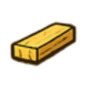

Die Idee
Eine Baumbank zu bauen ist eines dieser Projekte, die sofort Emotionen wecken: Sommerabende im Garten, ein schattiger Platz unter der Baumkrone, Holz, das mit der Zeit Patina bekommt. Diese halbe Baumbank entstand als Geschenk – und als perfektes Projekt für alle, die gerne präzise arbeiten und Freude am Basteln haben.
Die Konstruktion besteht aus drei Modulen (links, Mitte, rechts), die sich harmonisch zu einer halbkreisförmigen Gartenbank zusammenfügen. Jedes Modul ist eigenständig aufgebaut, folgt aber demselben konstruktiven Prinzip.
Warum Douglasie die perfekte Wahl ist
Für eine Gartenbank ist Douglasie nahezu ideal:
- sehr witterungsbeständig
- natürlich resistent gegen Pilze und Feuchtigkeit
- deutlich härter als Fichte oder Kiefer
- wunderschöne rötliche Maserung
- patiniert im Außenbereich zu einem edlen Silbergrau
Warum dieses Projekt so viel Spaß macht
Alle tragenden Elemente bestehen aus 44×44‑mm‑Douglasiebalken. Die Sitz- und Lehnbretter sind 18 mm stark – stabil, formschön und perfekt für den Außenbereich. Die ergonomische Neigung der Lehne und die abgestufte Sitzfläche sorgen für hohen Komfort.
Die Bauteile sind so konstruiert, dass sie sowohl maschinell als auch mit Handwerkzeugen gut herzustellen sind. Die Winkel (80° und 100°) geben der Bank ihre charakteristische Form.
Stückliste
Stückliste
 Balken 44×44 mm
Balken 44×44 mm
| Bauteil | Anz. | L (mm) |
|---|---|---|
| Bein hinten | 6 | 882 |
| Bein vorn lang | 2 | 670 |
| Bein vorn | 4 | 442 |
| Strebe oben | 6 | 590 |
| Strebe Lehne | 3 | 492 |
| Strebe hinten links | 1 | 492 |
| Strebe hinten rechts | 1 | 492 |
| Winkelstrebe links | 1 | 152 |
| Winkelstrebe rechts | 1 | 152 |
| 25 Stück | ca. 7 Balken | |
 Latten 44×24 mm
Latten 44×24 mm
| Bauteil | Anz. | L (mm) |
|---|---|---|
| Armlehne | 2 | 546 |
| Strebe unten | 4 | 590 |
| 6 Stück | ca. 3 Latten | |

Lehnbretter 90×18 mm
| Position | Anz. | L (mm) |
|---|---|---|
| Lehne 1 (L/M/R) | 3 | 581 |
| Lehne 2 (L/M/R) | 3 | 600 |
| Lehne 3 (L/M/R) | 3 | 618 |
| Lehne 4 (L/M/R) | 3 | 637 |
| 12 Stück | ||
Sitzbretter 90–100×18 mm
| Position | Anz. | L (mm) |
|---|---|---|
| Sitz 1 L/R | 2 | 765 |
| Sitz 2 L/R | 2 | 890 |
| Sitz 3 L/R | 2 | 1014 |
| Sitz 4 links | 1 | 1139 |
| Sitz 4 rechts | 1 | 1159 |
| Sitz 1–4 Mitte | 4 | 739–1113 |
| 12 Stück | ||
Deckleisten 80×18 mm
| Position | Anz. | L (mm) |
|---|---|---|
| Deckleiste links | 1 | 592 |
| Deckleiste Mitte | 1 | 566 |
| Deckleiste rechts | 1 | 592 |
| 3 Stück | ||
 Schrauben (Edelstahl A2)
Schrauben (Edelstahl A2)
| Schraube | Anzahl |
|---|---|
| Spax 3,5 × 30 | ca. 100 |
| Spax 3,5 × 40 | 4 |
| Spax 3,5 × 45 | 6 |
| Gesamt | ca. 110 Stück |
Technische Zeichnungen
Ein Klick auf eine Zeichnung öffnet die Vollansicht zum Blättern; ein Klick auf PDF öffnet die technische Zeichnung in Originalgröße.
Montage — Schritt für Schritt
-
Seitenteile bauen Jedes Seitenteil besteht aus Vorderbein, Hinterbein, oberer Strebe, unterer Strebe, Lehnenstrebe und Armlehne. Die Winkel (80° und 100°) sind entscheidend für die ergonomische Form.
-
Sitzfläche montieren Die vier Sitzbretter pro Modul werden von vorne nach hinten länger. Dadurch entsteht die charakteristische V‑Form.
-
Lehne aufbauen Vier Lehnbretter pro Modul, abgestuft und leicht geneigt. Die Deckleiste schließt die Lehne sauber ab.
-
Module verbinden Die drei Module werden nebeneinander gestellt und verschraubt – fertig ist die halbe Baumbank.
Einsatz im Garten — langlebig und gemütlich
Douglasie ist wie geschaffen für Outdoor‑Möbel. Mit einem pigmentierten Öl bleibt die rötliche Farbe erhalten – ohne Öl patiniert sie zu einem edlen Silbergrau. Die Bank eignet sich perfekt für Bäume, Terrassen, Feuerstellen oder als frei stehende Gartenbank.